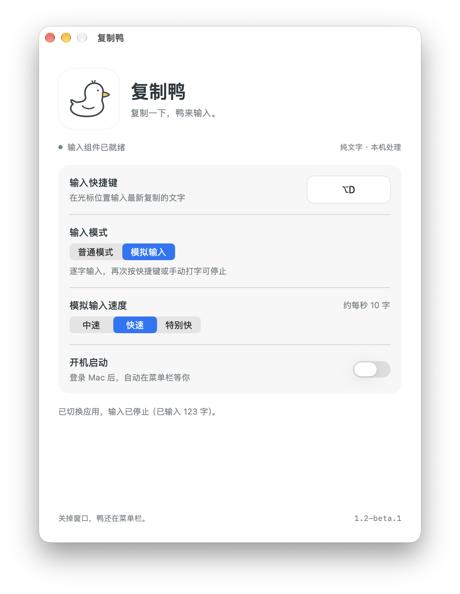
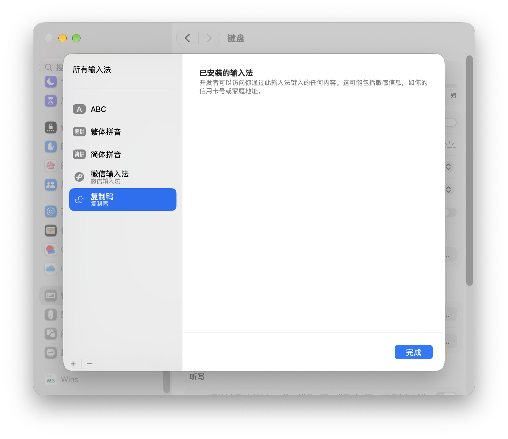

你的快捷键
默认 ⌃⌥V，也可以在设置中换成顺手的组合。
给 Mac 的小鸭子
💢 输入框不让粘贴，或者会区分粘贴与正常输入，让你只能重新手打一遍？
🐤 复制鸭（CopyDuck）是一款轻量的 macOS 菜单栏工具：按下快捷键，就能通过系统输入法，将剪贴板中的纯文字直接输入当前输入框。它适用于部分禁用粘贴、拦截粘贴快捷键，但仍支持系统输入法的网页和应用，减少重复录入长段文字的麻烦。支持中文、英文、换行和表情，文字处理全程在本机完成，不上传内容，也不保存剪贴板历史。
Apple Silicon · macOS 14 及以上 · 已在 macOS 27.0.1 实测
复制文字 → 点击输入位置 → 按下快捷键
作者在上 AP CSA 课时赶不完作业，偏偏 Albert 又被设置成不能粘贴，只好反复修改输入法的快捷输入词，把文字一点点塞进去……于是，就有了复制鸭。
复制鸭可以添加到“简体中文”输入法列表。触发快捷键时，它读取最新剪贴板、临时切换输入源，按所选模式一次写入整段或逐字输入，再恢复你原来的输入法。输入途中复制其他文字不会改变本次内容。
复制一段纯文字。
点击要输入文字的位置。
按下快捷键，鸭来写进去。
默认 ⌃⌥V，也可以在设置中换成顺手的组合。
不占 Dock；关掉设置窗口，仍在后台等你。
需要时开启，登录 Mac 后自动运行。
按快捷键时才读取剪贴板，不保存历史，不连接网络。
在设置或菜单栏切换普通模式／模拟输入。中速、快速、特别快约为每秒 5、10、20 字，标点和换行稍作停顿。模式和速度会记住；速度调整从下次输入生效。再次按快捷键、手动打字或切换输入位置可停止，已输入的文字会保留。
设置窗口和菜单栏截图由维护者试用 1.2-beta.1 时提供，展示 1.2 新增功能。界面为简体中文；⌥D 是自定义快捷键，默认是 ⌃⌥V。

在设置中切换输入模式，选择中速、快速或特别快，并调整快捷键和开机启动。

复制鸭作为系统输入法出现在已安装列表中。
点开菜单栏小鸭子，即可切换普通模式／模拟输入，并在子菜单选择三档速度。
Apple Silicon · macOS 14 及以上 · 已在 macOS 27.0.1 实测
打开新版会自动更新并启动输入组件，保留原快捷键和开机启动设置。
1.2 增加普通模式／模拟输入切换和三档打字速度，可在设置或菜单栏调整。1.1 修复组件自动启动并调整鸭子图标；1.0 保留最初的功能版本。
支持纯文字，包括中文、英文、换行和表情；不支持图片、文件或富文本格式。目标输入框需要支持系统输入法，部分安全输入框或自定义控件可能限制输入。
在系统设置 → 键盘 → 文本输入 → 编辑 → ＋ → 简体中文中添加“复制鸭”，再重新打开应用。个别首次安装需要注销并重新登录。
目前提供本机签名版本，尚未使用 Developer ID 签名或 Apple 公证。在其他 Mac 上打开时，系统可能要求在“隐私与安全性”中确认。
从菜单栏选择“退出复制鸭”。卸载前关闭开机启动，在系统键盘设置移除输入法，再移走应用程序和 ~/Library/Input Methods/复制鸭.app。